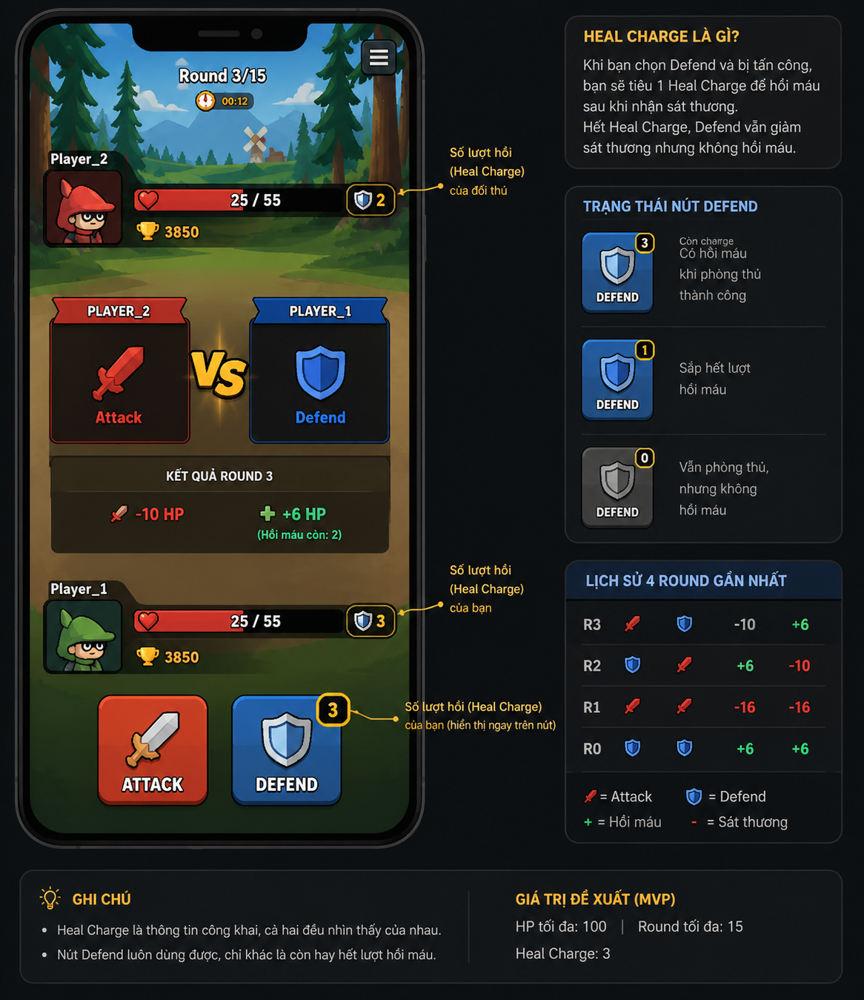

Trò chơi đối kháng theo lượt cho 2 người. Mỗi round, cả hai bí mật chọn
Attack hoặc Defend. Bản luật mới dùng
Heal Charge để giới hạn số lần hồi máu, giúp trận đấu rõ ràng và ít kéo dài hơn.
100HP tối đa
15round tối đa
12sthời gian chọn
3Heal Charges mỗi người

1. Mục tiêu trận đấu
Dilemma Duel là trò chơi đối kháng theo lượt dành cho 2 người chơi.
Mỗi người điều khiển một nhân vật trong đấu trường và cố gắng hạ HP của đối thủ về 0.
Người chơi thắng nếu đối thủ còn 0 HP hoặc thấp hơn.
Nếu hết 15 round mà chưa ai bị hạ, người còn nhiều HP hơn sẽ thắng.
Nếu hai người chơi có cùng HP khi trận kết thúc, kết quả là hòa.
2. Thông số cơ bản
Thông số
Giá trị
Số người chơi
2
HP tối đa
100
HP khởi đầu
100
Số round tối đa
15
Thời gian chọn mỗi round
12 giây
Thời gian chờ ghép trận
30 giây
Thời gian cho phép kết nối lại
20 giây
Heal Charges khởi đầu
3
Ở phiên bản MVP, hai nhân vật có chỉ số giống nhau để đảm bảo công bằng.
Khác biệt giữa hai nhân vật chỉ nằm ở tên, màu sắc, vị trí và hoạt ảnh.
3. Luồng chơi tổng quát
Người chơi nhập tên.
Bấm Tìm trận.
Hệ thống ghép 2 người chơi vào cùng một trận.
Trận đấu bắt đầu với countdown 3 giây.
Mỗi round, cả hai bí mật chọn Attack hoặc Defend.
Khi cả hai đã chọn, hoặc khi hết giờ, server xử lý kết quả round.
Hành động của hai bên được reveal cùng lúc.
HP, Heal Charges và lịch sử round được cập nhật.
Trận đấu tiếp tục cho đến khi có người hết HP hoặc hết 15 round.
4. Hành động trong round
Attack
Attack là hành động tấn công chủ động.
Nếu đối thủ cũng chọn Attack, cả hai cùng nhận sát thương lớn.
Nếu đối thủ chọn Defend, đối thủ nhận sát thương đã giảm, còn người tấn công nhận recoil nhẹ.
Attack không tiêu tốn tài nguyên đặc biệt nào.
Người chơi luôn có thể chọn Attack.
Defend
Defend là hành động phòng thủ.
Giảm sát thương nhận vào từ Attack.
Có thể hồi máu sau khi bị đối thủ Attack.
Chỉ hồi máu nếu còn ít nhất 1 Heal Charge.
Mỗi lần hồi máu thành công tiêu tốn 1 Heal Charge.
Nếu hết Heal Charge, vẫn giảm sát thương nhưng không hồi máu.
5. Heal Charges
Mỗi người chơi bắt đầu với 3 Heal Charges
Heal Charge là số lần người chơi có thể hồi máu khi dùng
Defend đúng thời điểm. Đây là tài nguyên công khai, cả hai bên đều nên nhìn thấy số lượt hồi còn lại.
Điều kiện tiêu Heal Charge
Người chơi chỉ tiêu 1 Heal Charge khi thỏa mãn cả 3 điều kiện:
Người chơi chọn Defend.
Đối thủ chọn Attack.
Người chơi còn ít nhất 1 Heal Charge.
Nếu đủ điều kiện, người chơi nhận sát thương đã giảm, tiêu 1 Heal Charge, rồi hồi máu.
Không tiêu Heal Charge khi nào?
Người chơi chọn Attack.
Cả hai người chơi cùng chọn Defend.
Người chơi chọn Defend nhưng đã hết Heal Charge.
Người chơi timeout và bị auto chọn Defend.
6. Bảng xử lý kết quả round
Người chơi A \ Người chơi B
Attack
Defend
Attack
A -16 HP, B -16 HP
A -2 HP, B -10 HP rồi B có thể hồi
Defend
A -10 HP rồi A có thể hồi, B -2 HP
Không ai mất HP, không ai hồi máu
7. Hồi máu từ Defend
Khi người chơi chọn Defend và bị đối thủ Attack:
Trạng thái Heal Charge
Kết quả
Còn Heal Charge
Nhận sát thương, tiêu 1 Heal Charge, hồi +6 HP
Hết Heal Charge
Nhận sát thương đã giảm, không hồi HP
Defender còn Heal Charge
A nhận -10 HP
A tiêu 1 Heal Charge
A hồi +6 HP
Kết quả ròng: A -4 HP
B nhận recoil -2 HP
Defender hết Heal Charge
A nhận -10 HP
A không hồi máu
Kết quả ròng: A -10 HP
B nhận recoil -2 HP
8. Thứ tự tính toán trong round
Nhận lựa chọn của cả hai người chơi.
Nếu có người chưa chọn khi hết giờ, áp dụng hành động mặc định.
Reveal hành động của hai bên.
Tính sát thương.
Trừ HP.
Kiểm tra điều kiện hồi máu từ Defend.
Nếu đủ điều kiện, trừ Heal Charge.
Cộng hồi máu.
Giới hạn HP trong khoảng từ 0 đến 100.
Ghi lịch sử round.
Kiểm tra điều kiện kết thúc trận.
9. Hết giờ chọn hành động
Mỗi round có 12 giây để chọn hành động.
Sau khi người chơi đã chọn, lựa chọn bị khóa và không thể đổi.
Nếu hết giờ mà người chơi chưa chọn, server tự động chọn Defend.
Hành động của đối thủ không được hiển thị trước khi cả hai đã khóa lựa chọn hoặc round hết giờ.
Nếu bị auto Defend do timeout, người chơi vẫn được giảm sát thương,
nhưng không được hồi máu và không tiêu Heal Charge.
10. Điều kiện thắng, thua và hòa
Kết thúc do hết HP
Trận đấu kết thúc ngay khi có ít nhất một người chơi còn 0 HP hoặc thấp hơn sau một round.
Nếu chỉ một người chơi còn 0 HP hoặc thấp hơn, người đó thua.
Nếu cả hai cùng còn 0 HP hoặc thấp hơn trong cùng round, kết quả là hòa.
Kết thúc do hết round
Nếu sau 15 round chưa ai bị hạ, người chơi có HP cao hơn thắng.
Nếu HP hai bên bằng nhau, kết quả là hòa.
11. Mất kết nối và kết nối lại
Nếu người chơi mất kết nối tạm thời, người đó có 20 giây để quay lại đúng trận.
Trong lúc mất kết nối, nếu round đang chờ lựa chọn và hết giờ, server tự động chọn Defend.
Nếu người chơi không quay lại trong 20 giây, người đó bị xử thua kỹ thuật.
Đối thủ được tính thắng.
Auto Defend do mất kết nối có cùng luật với timeout: vẫn giảm sát thương,
không hồi máu, không tiêu Heal Charge.
12. Thông tin cần hiển thị trong trận
Tên của mình và tên đối thủ.
Nhân vật của hai bên.
HP hiện tại và HP tối đa.
Round hiện tại, ví dụ Round 3/15.
Thời gian còn lại của round.
Số Heal Charges còn lại của bản thân.
Số Heal Charges còn lại của đối thủ.
Trạng thái lựa chọn của bản thân.
Trạng thái đối thủ đã chọn hay chưa, nhưng không lộ hành động trước khi reveal.
Sát thương và hồi máu của round gần nhất.
Lịch sử vài round gần nhất để đọc chiến thuật.
Gợi ý UI
HP72/100Heal Charge2DEFENDx2DEFENDx0, chỉ phòng thủ
Nút Defend luôn bấm được. Khi hết Heal Charge, nút nên thể hiện rõ là chỉ còn phòng thủ,
không còn hồi máu.
13. Tinh thần chiến thuật
Nếu đoán đối thủ sẽ Attack, chọn Defend giúp giảm sát thương và có thể hồi máu.
Nếu đoán đối thủ sẽ Defend, chọn Attack vẫn gây áp lực nhưng người tấn công chịu recoil nhẹ.
Nếu cả hai cùng Attack, cả hai đều mất nhiều HP.
Nếu cả hai cùng Defend, không ai mất HP và không ai hồi máu.
Heal Charges là tài nguyên quan trọng, cần dùng đúng thời điểm.
Người chơi không thể hồi máu vô hạn. Vì mỗi người chỉ có 3 Heal Charges,
việc chọn Defend cần được tính toán kỹ hơn.
14. Ví dụ xử lý round
Ví dụ 1: Attack vs Attack
Player 1 chọn Attack
Player 2 chọn Attack
Player 1: -16 HP
Player 2: -16 HP
Không ai hồi máu
Không ai tiêu Heal Charge
Ví dụ 2: Defender còn Heal Charge
Player 1 chọn Attack
Player 2 chọn Defend
Player 2 còn 3 Heal Charges
Player 1: -2 HP
Player 2: -10 HP
Player 2 tiêu 1 Heal Charge
Player 2 hồi +6 HP
Kết quả:
Player 1: -2 HP
Player 2: -4 HP ròng
Player 2 còn 2 Heal Charges
Ví dụ 3: Defender hết Heal Charge
Player 1 chọn Attack
Player 2 chọn Defend
Player 2 còn 0 Heal Charges
Player 1: -2 HP
Player 2: -10 HP
Player 2 không hồi máu
Kết quả:
Player 1: -2 HP
Player 2: -10 HP
Player 2 vẫn còn 0 Heal Charges
Ví dụ 4: Defend vs Defend
Player 1 chọn Defend
Player 2 chọn Defend
Không ai mất HP
Không ai hồi máu
Không ai tiêu Heal Charge
15. Những tính năng chưa có trong MVP
Nhiều nhân vật có kỹ năng riêng.
Trang bị hoặc vật phẩm.
Chí mạng hoặc sát thương ngẫu nhiên.
Bot AI.
Mời bạn bè hoặc phòng riêng.
Xếp hạng ELO.
Chat trong trận.
Hồ sơ hoặc cosmetic nâng cao.
16. Ghi chú cân bằng đề xuất cho MVP
Thành phần
Giá trị
HP tối đa
100
Round tối đa
15
Attack vs Attack
-16 HP mỗi người
Attack vs Defend
Attacker -2 HP
Defend nhận Attack
Defender -10 HP
Hồi máu khi có Heal Charge
+6 HP
Heal Charges mỗi trận
3
Defend vs Defend
Không hồi máu
Bản này giúp Defend vẫn có giá trị, nhưng không còn quá an toàn như bản cũ.
Người chơi vẫn có quyền phòng thủ bất cứ lúc nào, nhưng chỉ có 3 lần hồi máu thật sự trong cả trận.